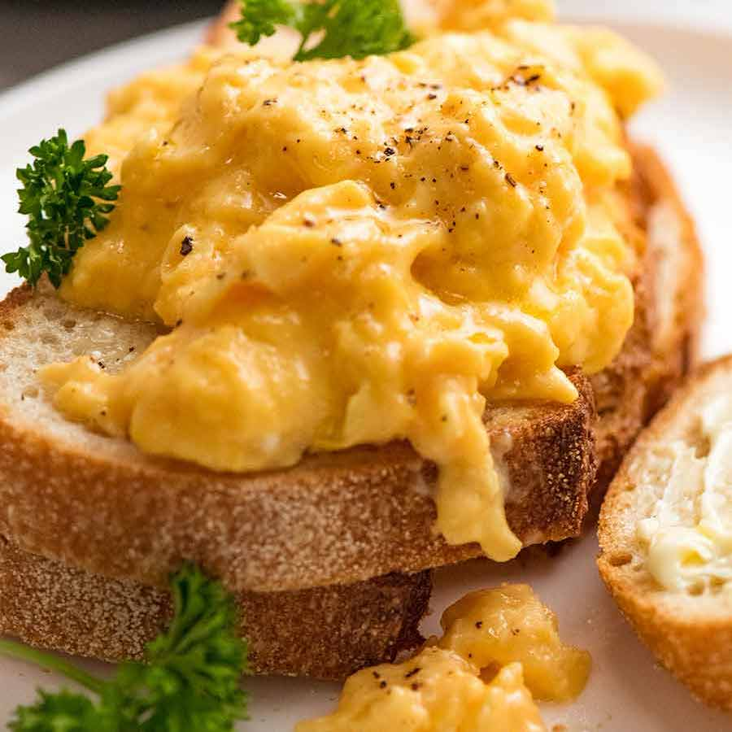

Eggs on toast

A thing you eat in the morning that tastes real good
Ingredients
- Three organic eggs
- Splash of milk
- Knob of butter
- Teflon frying pan
- Salt and pepper
- Two slices of bread
Steps
- Beat three eggs in a glass.
- Add a splash of milk
- Grind some pepper into the mixture
- Heat a know of butter in the pan until it begins to bubble.
- Add mixture to the pan.
- Stir regularly.
- Toast bread once or twice, depending on preference.
- Place scrambled egg on top of bread.
- Add salt and extra pepper if needed.
- Serve with hot cup of Irish tea.